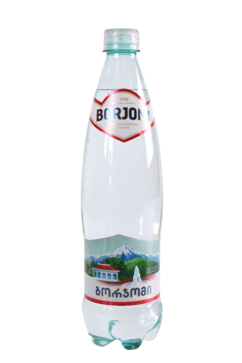

Borjomi is a mineral water of volcanic origin, which by natural standards is over 1,500 years old.
It rises to the surface from the depth of 8-10 km, pushed up by natural carbon dioxide pressure.
Unlike many other sodium bicarbonate mineral waters, Borjomi does not cool down before it reaches the surface
and comes out warm (38-41°С), getting enriched “on its way” with a composition of 60 various minerals found in rock
layers of the Caucasus Mountains.

Mineral Composition | Borjomi By the natural standards of Borjomi, it has been over 1500
years old, but its mineral composition remains unchanged. This is confirmed by constant
laboratory research, which has been carried out since 1890.
Mineral Composition Borjomi mg / dm3
Hydrocarbonate 3500 – 5000
Chlorides 250 – 500
Calcium 20 – 150
Magnesium 20 – 150
Sodium 1000 – 2000
Mineralization 5,0 – 7,5 g/l